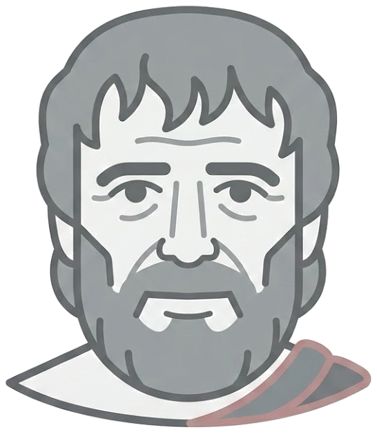
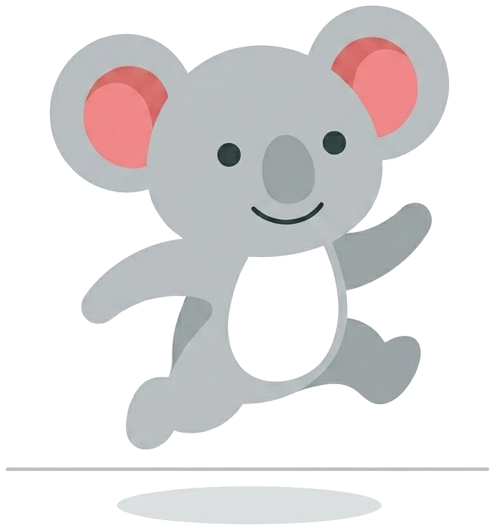

seneca
· 투자 모의주행
←

jumpingkoala
seneca · 투자 모의주행 시뮬레이터
11자산 다변량 GBM 몬테카를로 · 250경로 ·
하위 10% 시나리오
로 손실 면역을 훈련합니다.
자산 배분
직접 입력
비중 합계
100%
투자금:
기간:
재시뮬레이션 ↻
시나리오 분포
스트레스 테스트 시작 →
⚙
하위 10%
손실 면역 훈련 (기본)
중앙값
평균적 경로
상위 10%
낙관 시나리오
파라미터 설정 후
스트레스 테스트 시작
을 누르면 하위 10% 시나리오가 주 단위로 전개됩니다. -5%마다 결정의 순간이 등장하고,
존버·물타기·손절
중 선택해 그 결정이 어떻게 되돌아오는지 확인하세요.